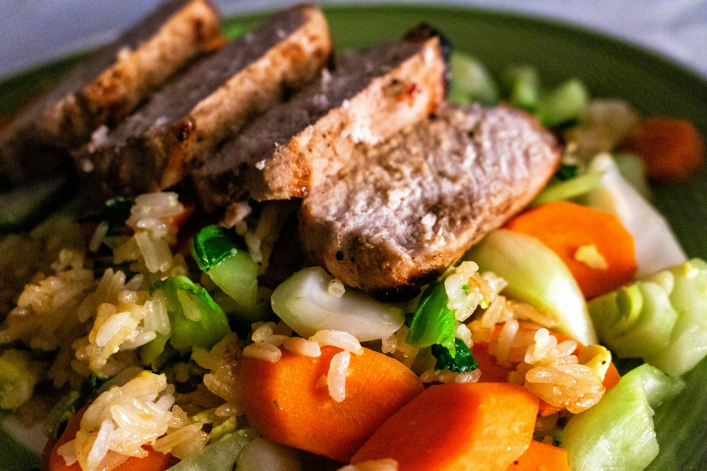

<
Air Fryer Pork Chops
Air Fryer Pork Chops

Description
These breaded pork chops made in air fryer.
Ingredients
- 4 (5 ounce) boneless, center-cut prok chops, 1-inch think
- 1 teaspoon Cajun seasoning
- 1 1/2 cups cheese and garlic croutons
- 2 large eggs
- cooking spray
Directions
- Preheat and air fryer to 400 degrees
- Place pork chopson a plate and season both sides with Cajun
- Pulse Croutons in an small food processor until fine
- Place 2 chops in the basket of the air fryer and cook for 10 minutes
- Serve and enjoy
Back to home page